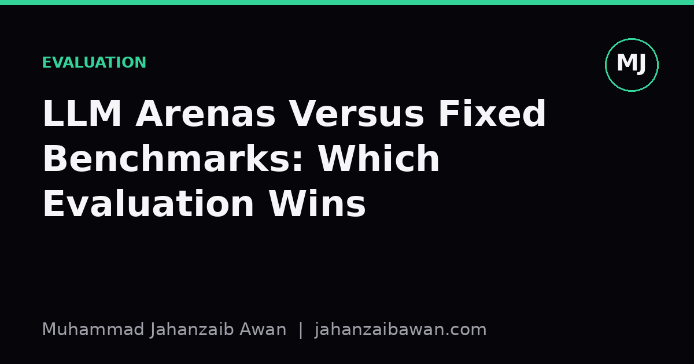

LLM Arenas Versus Fixed Benchmarks: Which Evaluation Wins
Pairwise preference arenas and static benchmark suites measure different things. Knowing which one you are reading is the first step to not being misled by a leaderboard.

Two leaderboards, two different questions
If you have followed language model releases over the past couple of years, you have seen two kinds of leaderboards. One is a fixed benchmark suite: a set of questions with known correct answers, scored automatically, producing a single accuracy number. The other is an arena: anonymous model outputs shown side by side to human raters, who pick the one they prefer, with results aggregated into something like an Elo rating. Both get called 'evaluation', and both produce rankings, but they are answering fundamentally different questions, and treating them as interchangeable is where a lot of confusion in this field comes from.
A fixed benchmark asks: can this model produce the correct answer to this specific, often narrow, task? It is closer to an exam. An arena asks: given two plausible answers, which one does a person prefer? That is closer to a taste test. A model can be excellent at the exam and mediocre at the taste test, or the reverse, and neither result is wrong; they are simply measuring different properties of the system. The practical danger is reading an arena rank as if it told you about factual accuracy, or reading a benchmark score as if it told you about how pleasant the model is to actually use.
Why fixed benchmarks drift out of relevance
Fixed benchmarks have obvious virtues: they are reproducible, cheap to run repeatedly, and give you a clean number you can track over time. If a benchmark has a thousand maths word problems with verified answers, you can score any model against it in minutes and get the same number every time. That reproducibility is genuinely valuable, and I would never suggest abandoning it.
The trouble is contamination and narrowness. Suppose a benchmark of two thousand questions has been public for a year. There is a real chance that some fraction of those questions, or close paraphrases, appear somewhere in a model's training data, whether through direct scraping of benchmark repositories or through blog posts and forums discussing the answers. If even fifteen percent of the test set has leaked in some form, a model's reported accuracy can be inflated by several points without anyone deliberately cheating; it is simply an artefact of the training pipeline overlapping with the evaluation set. A score of 82 percent on a leaked benchmark might represent genuine capability of closer to 74 percent on genuinely unseen items. You cannot tell the difference from the leaderboard alone, which is precisely the problem: the number looks exact but its meaning has quietly degraded.
There is also the narrowness issue. A benchmark built from maths problems and coding exercises tells you almost nothing about how a model handles an ambiguous, conversational request, how it recovers from a vague follow-up, or whether its tone is appropriate for the context. Those are the situations most people actually use these models for, and a fixed benchmark, however well constructed, was never designed to capture them.
Why arenas are not a clean substitute
The arena approach sidesteps both of those problems in part. Because prompts come from real users or are freshly sampled, there is no fixed answer key for anyone to leak into training data, and because outputs are compared head to head on open-ended tasks, the evaluation captures something closer to real usage. If model A wins sixty percent of its pairwise comparisons against model B across several thousand votes, that is a reasonably stable signal of relative preference, assuming the comparisons are reasonably matched on topic and difficulty.
But preference is not the same as correctness, and this is the part that gets glossed over. Raters tend to favour longer, more confident-sounding, more fluently formatted answers, even when those answers contain subtle factual errors that a non-expert rater would not catch. Imagine two responses to a technical question: one is a concise, correct, slightly terse answer; the other is a longer, warmly worded answer that gets a key detail wrong but presents it persuasively. In a blind pairwise vote among general raters, the second response wins a noticeable share of the time purely on style. Scale that bias across thousands of comparisons and you get a leaderboard that reliably rewards confident fluency over accuracy, which is a dangerous thing to optimise a model towards if the downstream use case actually requires correctness.
There is also a selection effect in who votes and on what. If the prompt distribution in an arena skews towards casual chat, creative writing, and general knowledge questions, a model finely tuned for technical precision but slightly less charming in tone will rank lower than its practical usefulness for technical work would suggest. The arena is measuring preference within its specific population and prompt mix, and that population is not neutral; it is a sample with its own biases, just like any other test set.
What this means for how you actually evaluate
The honest conclusion is that neither approach is sufficient alone, and the right move is to treat them as complementary instruments rather than competing scoreboards. A fixed benchmark, refreshed regularly with genuinely novel items and checked for contamination, is still the right tool for tracking whether a model has improved at a well-defined, checkable task such as arithmetic reasoning or code correctness. An arena-style comparison is the right tool for understanding how a model behaves in open-ended, subjective, conversational settings where there is no single correct answer to check against.
If you are evaluating models for a specific application, build a small evaluation set that reflects your actual task, hold it out properly so it cannot leak into any future fine-tuning, and consider using both a correctness metric where one is well defined and a lightweight pairwise comparison where it is not. Be explicit with yourself and with anyone reading your results about which question each number answers. A leaderboard rank of third place in an arena says something true and useful, but it is not a substitute for knowing whether the model gets your domain's facts right, and a 90 percent benchmark score is not a substitute for knowing whether people actually find its answers useful. Keep the two separate in your head and you will read every leaderboard with considerably more scepticism, and considerably more accuracy.